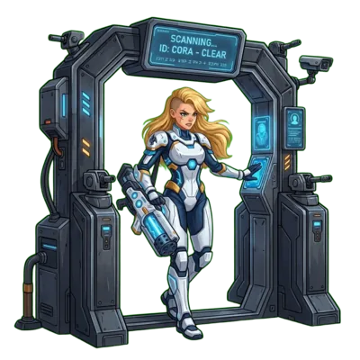

Cora a été construite contre quelque chose.
Cora commence en spectatrice, suit les données jusqu'à une halle sans adresse, et revient avec la porte qui lui a manqué là-bas. L'adversaire est un groupe inventé appelé Omnivor - ses clauses, ses centres de données et sa facture d'électricité, eux, ne le sont pas.

Cora tient la porte
Conçue à Berne, exploitée à Zurich et à Genève, sur l'un des réseaux les plus propres d'Europe. Mêmes modèles, même vitesse, mêmes outils - sauf que rien ne sort, et que chaque requête traverse une règle que vous avez écrite. Comment Cora y est arrivée, c'est l'histoire qui le raconte.
OMNIVOR N'EXISTE PAS. LES CLAUSES ET LES CENTRES DE DONNÉES QUI L'ONT FAÇONNÉ, EUX, EXISTENT.